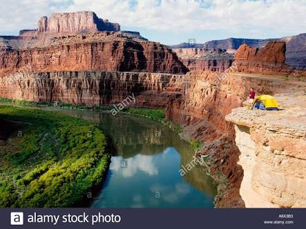
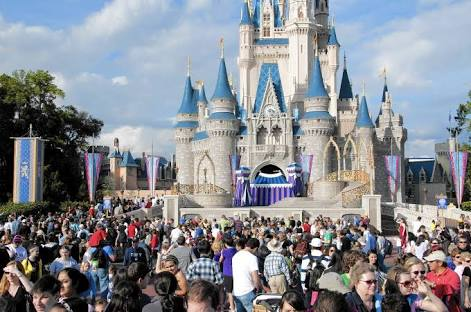

TOURIST ATTRACTIONS
NEW YORK
There are many tourists attraction in U.S.A. As of 2007, ther are 2,462 registerd National Historic Landmark(NHL) recognized by the united states goverment. Each major US city has thousand of land mark.For example, New York City has 23,000 land mark designed by the land mark preservation commission. these land mark include various individual building,interiors,historic districts,and scenic which help define the culture and character of new york city.Ther are many natural monuments in the United states and they are a large tourist venue.

see also
following is the list of some other tourist attraction in u.s.a.
Exhibitions and trade shows
- health,beauty,wellness
- agriculture
- apparel
- forestry
- interior design
- trafic transport
- it.commnucation
- Leisure
- medical and hospital equipment
- engineering manufacturing
- science
- fire safety defense
- building
- Middle East Electricity
- energy
- environment
Parks and zoos
- canyon national park
- national zoological park washington
- Alabama gulf coast zoo
- birmingham zoo
- charles paddock zoo
- happy hollow park
- folsom city zoo sanctuary
- living disert Zoo
- los angeles Zoo
- micke grove zoo,lodi
- safari west
- santa ana zoo
- sequoia Park zoo
- wildlife waystaion
- butterfly world
- brevard zoo
- central florida zoo
- disney's animal kingdom
- flamingo gardens
- naples zoo
- palm beach zoo
- zoo world panama city
Museums and recreational places

- calfornia living museum
- national gallery art
- calfornia academy of sciences
- calfornia science center
- national gallery art
- micke grove zoo,lodi
- safari west
- santa ana zoo
- sequoia Park zoo
- wildlife waystaion
- butterfly world
- brevard zoo
- central florida zoo
Libraries
- Al-Mankhol Public Library
- Al Safa Library
- Al Towar Library
- Central Library[A]
- Public Libraries
- Hatta Library
- Hor Al Anz Library
- ICDL Center
- Rashediah Library
- Umm Suqaim Library
Back to top of page